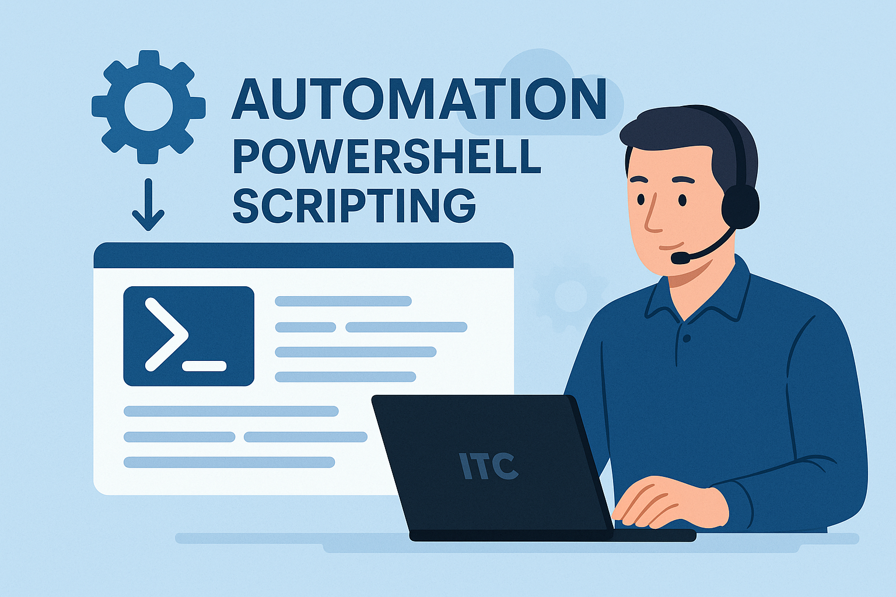

I mitt arbete som IT-supporter identifierade jag återkommande uppgifter som kunde automatiseras. Genom att utveckla PowerShell-skript skapade jag lösningar som inte bara sparade tid utan också minskade felmarginalen i rutinuppgifter. Min approach kombinerar teknisk skicklighet med en djup förståelse för supportteamets vardag.
Nyckelresultat & Prestationer
- Automatiserade användarprovisioning som reducerade onboarding-tid från 45 till 10 minuter per anställd
- Utvecklade ett skript för att identifiera inaktiva konton, vilket förbättrade säkerheten och licenshanteringen
- Skapade automatiska rapporter om systemhälsa som gav supportteamet proaktiv insikt
- Implementerade en lösning för att automatiskt återställa lösenord utan kompromiss om säkerhet
- Dokumenterade och delade alla skript i teamets kunskapsbas, vilket stärkte kollegornas effektivitet
"Automatisering i IT-support handlar inte om att ersätta människor, utan om att frigöra tid så vi kan fokusera på det verkligen viktiga - att hjälpa användarna på bästa sätt. Mina skript är designade av en supporter för supportrar."
PowerShell
Automatisering
Schemalagda uppgifter
API-integration
Active Directory
Rapportering
Dokumentation
Tillbaka till portföljen